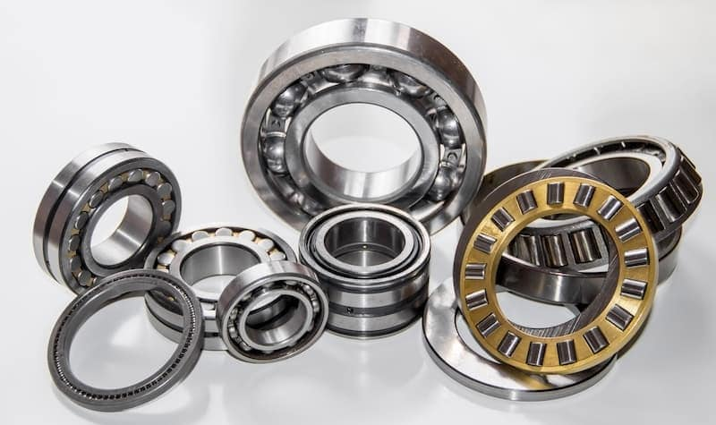
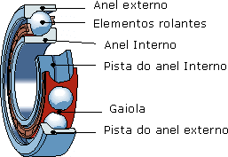
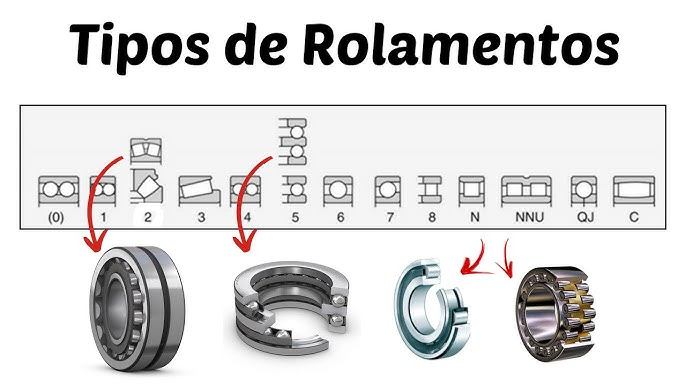
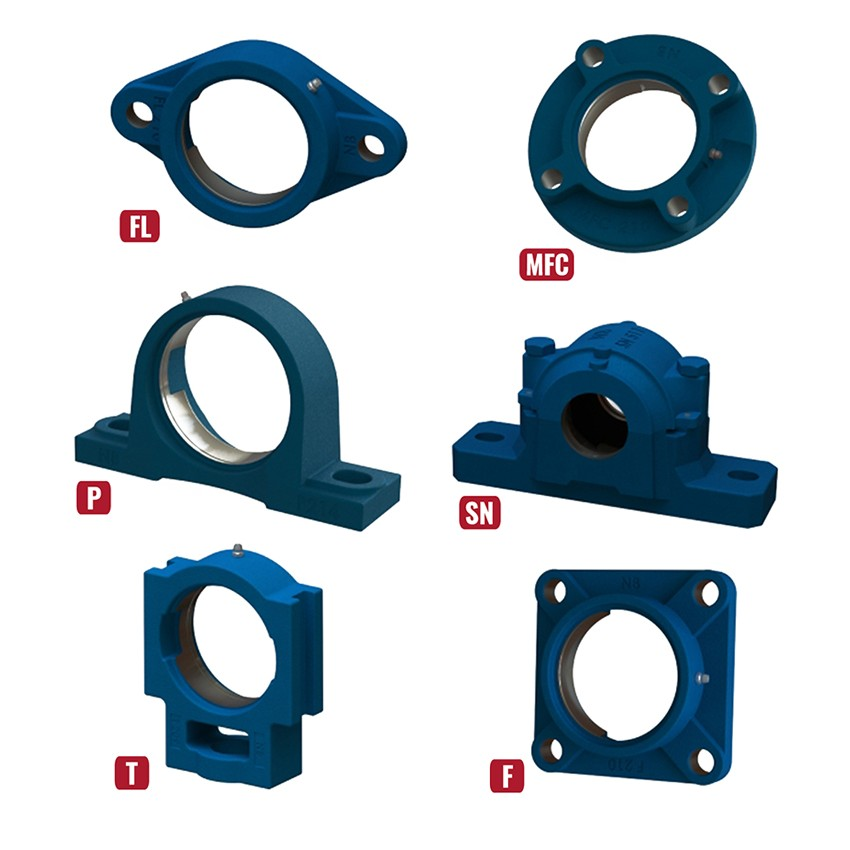
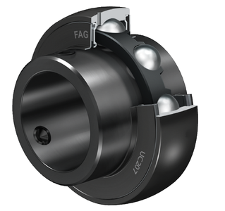

Rolamentos são componentes mecânicos essenciais que permitem o movimento suave e eficiente entre partes móveis, reduzindo o atrito e suportando cargas. Eles são amplamente utilizados em diversas aplicações, desde veículos automotores até máquinas industriais, garantindo o funcionamento confiável e duradouro dos sistemas mecânicos.

Os rolamentos são compostos por anéis internos e externos, elementos rolantes (como esferas ou rolos) e uma gaiola que mantém os elementos rolantes na posição correta. Os materiais utilizados na fabricação dos rolamentos incluem aço, cerâmica e plásticos de alta resistência, escolhidos com base nas condições de operação e requisitos de desempenho.

Existem diversos tipos de rolamentos, cada um projetado para atender a necessidades específicas. Os principais tipos incluem:
A especificação de um rolamento envolve considerar diversos fatores, como as cargas a serem suportadas, a velocidade de operação, as condições ambientais e o espaço disponível. A seleção adequada do tipo, tamanho e material do rolamento é fundamental para garantir o desempenho e a durabilidade do sistema mecânico.
| Primeiro dígito Modelo do rolamento | Segundo dígito Carga de trabalho | Dois últimos dígitos Diâmetro do eixo | Blindagem Modelo | Lubrificação Tipo | Folga Folga interna |
|---|---|---|---|---|---|
| 6 rígido de esferas | 0 carga leve | 00 => 10 mm | Z blindagem metálica (1 lado) | G graxa padrão | C2 menor que o normal |
| 7 contato angular | 1 carga leve | 01 => 12 mm | 2Z ou ZZ blindagem metálica (2 lados) | L baixa fricção | CN ou sem código >> normal |
| 5 axial de esferas | 2 carga média | 02 => 15 mm | RS vedação de borracha (1 lado) | HT alta temperatura | C3 folga maior que o normal |
| 3 rolos cônicos | 3 carga pesada | 03 => 17 mm | 2RS vedação de borracha (2 lados) | WT resistência à água | C4 folga muito maior que o normal |
| 2 autocompensador de rolos | 4 carga extra pesada | 04 => 20 mm | OPEN sem vedação | VT alta velocidade/temperatura | C5 extremamente alta |
| NU/NJ rolos cilíndricos | - | 05 => 25 mm | - | - | - |
| N/NF rolos cilíndricos (variações) | - | 06 => 30 mm | - | - | - |

Mancais são componentes que suportam e guiam os rolamentos, garantindo a estabilidade e o alinhamento adequados durante a operação. Eles podem ser fixos ou deslizantes, dependendo do tipo de aplicação e das condições de carga. A escolha do mancal correto é crucial para o desempenho e a durabilidade do sistema mecânico. Rolamentos UC são rolamentos inserto utilizados dentro de mancais como UCP, UCF, UCFL e UCT.
